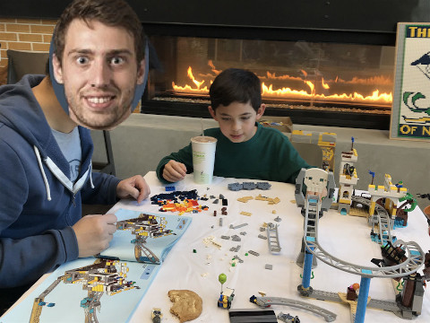

Caleb is now in Upper El1 and is currently tackling multiplication and division. He recently discovered squared numbers and was wondering the following:
Given a positive integer
n, what is the least number of perfect square numbers (for example, 1, 4, 9, 16, ...) which sum ton.
For example, for the number 12, he knows he can use three 4s (which is
a perfect square) to add up to 12.
Likewise, for the number 13, he has determined that he can use 4 and
9 to sum up to 13.
Caleb would like for you to write a program than determines what is the
least number of perfect squares required to sum up to any arbitrary
positive integer n.
Each line of input will be a positive integer n. You are to find the
least number of perfect square numbers that sum up to n.
12
13
For each input number n, print out the least number of perfect square
numbers that sum up to n.
3
2
This is based on 279. Perfect Squares problem on the Leetcode.
To submit your work, follow the same procedure you used for Reading 00:
$ cd path/to/cse-30872-fa24-assignments # Go to assignments repository
$ git checkout master # Make sure we are on master
$ git pull --rebase # Pull any changes from GitHub
$ git checkout -b challenge22 # Create and checkout challenge22 branch
$ $EDITOR challenge22/program.cpp # Edit your code
$ git add challenge22/program.cpp # Stage your changes
$ git commit -m "challenge22: done" # Commit your changes
$ git push -u origin challenge22 # Send changes to GitHub
To check your code, you can use the .scripts/check.py script or curl:
$ .scripts/check.py
Checking challenge22 code ...
Result Success
Time 0.03
Score 6.00 / 6.00
$ curl -F source=@challenge22/program.cpp https://dredd.h4x0r.space/code/cse-30872-fa24/challenge22
{"result": "Success", "score": 6, "time": 0.03212690353393555, "value": 6, "status": 0}
Once you have committed your work and pushed it to GitHub, remember to create a pull request and assign it to the appropriate teaching assistant from the Reading 11 TA List.
Okay, so this problem is a couple of years old. I'll update the story one day :]. ↩